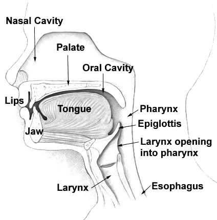
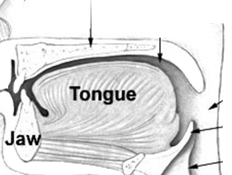

Blocks — preview
Not a lesson and not marked up as one. One block per ### entry in CONTENT_EXAMPLES.md,
each on its own heading, in the file's own order. The words are filler; the point is the structure: which container
carries the block, how many columns the content forces, what the control is, and whether the shape reads as a block
at all.
Four scripts run on this page. notes.js reads and writes
qa/NOTES.md for the note box under each item heading; player.js upgrades the music block
below from its native <audio controls> to the drawn bar and the lit lyric line, and does nothing at
all if it is missing; readout.js builds the nav and the line under each note box from the menu itself; engine4.js presents the thirteen game blocks, [27]–[39], and does nothing if it is missing.
Every other class used here already exists in style.css and every
block follows the ## headers in style.css: .panel / .card / .chart / .dialog
for the frame, .qgrid stack with --rows for radios, .blanks sent with
--rows for gaps, .itemrow with data-cols for paired halves.
The line directly under each note box is that shape's headline from CONTENT_EXAMPLES.md, minus the identity —
the identity is the frame's own heading, and the line above the block carries the rest of that ### line,
with the shape atoms and the item and option counts. Nothing about it is stored here: the page reads the menu when it
loads and again every 2 s, so a heading rewritten in the file appears under its block without a reload, and an entry
with no block on this page is named in the nav rather than quietly missing. Nothing else is printed about a block:
there is no caption at its foot, because a sentence that is not in the menu would be this page arguing its own case.
Every block on the page answers for a numbered entry, so nothing here can be out of date against the file: the nav and the line over each block are read from CONTENT_EXAMPLES.md, and a heading rewritten there appears here on the next poll.
The figures drawn inside a block are the last five entries, under [INSIDE]: [63] the timeline, [64] the phrase marks, [65] the parts of speech, [66] the voice contour and [67] the pronunciation key. None of them owns a container or a control — the block that hosts one owns the .panel and supplies the radio, gap or textarea that saves, which is why they are listed apart from the vehicles. The ordinary vehicles that carry a drawn figure plus the control that makes it a block are [40], [41] and [55]–[62]. The player's own CSS (`[02]`/`[03]`) lives in style.css under
## AUDIO PLAYER, because a kept shape is lesson-facing; every other draft figure here is
.vz-* in qa/preview-visual.css, so it stays out of the lesson stylesheet until the shape
is kept. No network, no font above the page's own palette, and every figure
prints.
Demo — [02] shape, from the steps
--search="Miley Cyrus Wrecking Ball" --lrc-id=3209411 --lines=9,4 --title="Wrecking Ball" --early=-2 --cue-shift=-1 — LRCLIB 3209411 (222.00 s) paired at 0.0 s with the 222 s upload, lines 9–12 at 40.74 · 45.09 · 48.72 · 52.74 s placed 2 s later because this sheet runs early against the upload, clip cut 40.73–59.63 s → 18.85 s, a 0.5 s fade at each end, the end 2 s past the next cue, and the four data-t moved 1 s earlier by --cue-shift.
Wrecking Ball
Miley Cyrus
- I came in like a wrecking ball
- I never hit so hard in love
- All I wanted was to break your walls
- All you ever did was wreck me
Demo — [03] shape, from the steps
--search="The Longest Johns Drunken Sailor" --lines=11,4 --width=full — LRCLIB 9567200 (144.00 s) paired at 0.0 s, lines 11–14 at 17.00 · 18.87 · 20.73 · 22.86 s placed 1 s earlier, clip cut 13.99–26.61 s → 12.57 s with a 0.5 s fade at each end: the same four starts in the full-width shape.
Drunken Sailor
The Longest Johns
- What shall we do with a drunken sailor?
- What shall we do with a drunken sailor?
- What shall we do with a drunken sailor?
- Early in the morning
A shanty is a work song, and the shape here is a question asked three times so that everyone can join before it resolves. The repeats are not decoration: the first names the trouble, the second gives the crew a line long enough to haul on, and the third lands on Early in the morning — the only line that answers, and the part the sailors actually need, since it says when the work starts.
[02]
<TEACH|OPTION> <THIRD-> Plays a recording with lyrics and shows which line is being sung <,> <,>
Twinkle, Twinkle, Little Star
Dcoetzee
- Twinkle, twinkle, little star,
- How I wonder what you are!
- Up above the world so high,
- Like a diamond in the sky.
[03]
<TEACH|OPTION> <FULL> Plays a recording full width with one paragraph explaining its words <,> <,>
I Love You, California
Knickerbocker Quartet and Elizabeth Spencer
- I love you, California, you’re the greatest state of all.
- I love you in the winter, summer, spring and in the fall.
- I love your fertile valleys; your dear mountains I adore.
- I love your grand old ocean and I love her rugged shore.
The song speaks to California as if the state were a person — I love you, said to a place. Each couplet piles up things rather than arguing for them: winter and summer, valleys and mountains, ocean and shore. The pairs rhyme (all / fall, adore / shore), so the verse stands still while the tune moves — which is why the last word of each pair is the one you hear land.
What the four lines do with words
| word | what it is doing here |
|---|---|
| you’re the greatest | the superlative plus a contraction: you are → you’re. Praise in English almost always contracts — you are the greatest sounds like a speech, you’re the greatest sounds like a person |
| fertile | said of land that grows things, not of people. A field is fertile; a person is healthy or creative |
| adore | one step past love, and mostly for things, places and babies: I adore that song, I adore her |
| rugged | rough and uneven — used of coast, mountains, faces and, in business English, of someone who does not give up |
[04]
<TEACH> <THIRD-> Presents a word's etymology and how that is relevant or useful to the student <2|4> <,>
Nice
- c. 1300 — Latin nescius
- "not knowing"
the word enters meaning foolish - 1300s — Old French nice
- "careless, clumsy"
- 1500s — English
- "precise, careful"
the sense turns inward - 1800s — English
- "pleasant, kind"
the sense in use now
Nothing was added to this word. The meaning walked from ignorant to kind in six hundred years, which is why nice is the vaguest compliment in English.
[05]
<TRAIN> <HALF-> A drawn street map with numbered places to route through <4|5> <2|4>
mapRoute
Write the route from 1 to 6, then from 6 to 8. Tick each place as you pass it — the boxes are on the map.
Use the place names and street names on the map and nothing else. Two turns is enough for each leg.
[06]
<TEACH> <HALF-> Cue, the form it forces, an example <4|6> <3|3>
signalTable
| The Cue | what it forces | example |
|---|---|---|
| yesterday | past simple | I saw him yesterday. |
| since 2019 | present perfect | I have lived here since 2019. |
| right now | present continuous | I'm working right now. |
| every day | present simple | I walk every day. |
| by the time… | past perfect | By the time we arrived, it had closed. |
[07]
<TEACH> <FULL> One contrast across three word positions <2|4> <3|3>
soundGrid
| written | at the start | in the middle | at the end |
|---|---|---|---|
| X | ship | nation | fish |
| TI | chair | teacher | watch |
| TH | think | nothing | both |
[08]
<TEACH> <HALF-> Two word sets as rows and columns, ticks where they combine <3|5> <3|4>
collocationMatrix
| photo | shower | decision | |
|---|---|---|---|
| make a | ✗ | ✗ | ✓ |
| take a | ✓ | ✓ | ✗ |
| do a | ✗ | ✗ | ✗ |
| have a | ✓ | ✓ | ✗ |
| get a | ✓ | ✗ | ✗ |
[09]
<TEACH|TRAIN> <HALF> Pairs an everyday verb with its one-word twin, then asks which twin fits <3|6> <1|1>
twoWordVerb
| one-word twin | everyday form |
|---|---|
| postpone | put off |
| tolerate | put up with |
| investigate | look into |
| surrender | give up |
twoWordVerb
Write the everyday form that fits each line. Use the right-hand column above.
[10]
<TEACH|TRAIN> <HALF> Two correct versions of one message for a named hearer <3|6> <2|4>
registerContrast
| stiff | spoken, everyday |
|---|---|
| I would like to request an extension. | could I have a bit more time |
| I am afraid that is not possible. | yeah, that's not happening |
| Please find the details attached. | I've put it in the chat |
registerContrast
Who is being spoken to is in the stem. Pick the wording that survives that audience.
[11]
<TEACH|TRAIN> <HALF> One root's forms in columns by the job each does <5|5> <3|6>
wordFamily
| verb | person | thing | thing2 | description |
|---|---|---|---|---|
| decide | decider | decision | — | decisive |
| produce | producer | product | production | productive |
| explain | — | explanation | explainer | explanatory |
wordFamily
Use one member of the family in each sentence.
[12]
<TEACH|TRAIN> <FULL> 'Unknown plan' block, beside block with fields to have the student ask questions and learn the details that they need <1|1> <4|8>
infoGap
Weekend plan, so far:
- Saturday: film, seven o'clock
- Sunday: unknown
- meeting point: unknown
Ask questions to clarify the plan:
[13]
<TEACH|TRAIN> <HALF> A real document read for what its parts do <1|1> <3|>
genreDoc
| RIVERSIDE LEISURE CENTRE — session ticket | |||
|---|---|---|---|
| session | lane swim | date | sat 14 |
| time | 07:00 – 08:30 | price | £4.20 |
| arrive by | 06:50 | refunds | none after 24h |
| bring | own towel | note | lockers need a £1 coin |
genreDoc
[14]
<TEACH|TRAIN> <HALF> Notices, the options each offers, the word doing the work <4|8> <4|4>
signScan
| the notice | what it does to you |
|---|---|
| No entry beyond this point | |
| Please keep this door closed | |
| Wet floor | |
| Staff only |
[15]
<TEACH|TRAIN> <HALF-> A form's fields, one item in each <3|> <1|1>
formFill
| Library Card Application | |
|---|---|
| surname | |
| first name | |
| date of birth day / month / year | |
| postcode | |
The details given: Ana Ferreira · 3 April 2009 · SW1A 2AA · and one detail that belongs in no box at all.
[16]
<TEACH> <HALF> The idiom, its literal reading, its source <1|1> <,>
to let the cat out of the bag
literally: to open a bag and let an animal leave it
where it comes from: one story is that a market seller would swap a pig for a cat, and the buyer found out when the bag was opened
[17]
<TRAIN> <HALF-> The answer given, the question to write <3|6> <1|1>
questionBuilding
Each line is what someone answered. Write the question that got that answer.
[18]
<TRAIN> <HALF> The moves that repair a breakdown, with the tone of each <3|6> <1|1>
repairMoves
The conversation has come apart. Write the move that gets it going again.
Ana: so anyway I was like, whatever, and then he went and —
You:
Ana: he left without saying anything.
[19]
<TEACH|TRAIN> <HALF> One sentence and the three readings its stress creates <2|> <3|5>
emphaticBeat
Pattern:
the beat lands on the word that answers the doubt, and every other word stays flat.
I never said he took it. — it wasn't me who said it.
I never said he took it. — I wrote it, maybe, but I didn't say it.
emphaticBeat
Someone has just accused you of something each time. Write the one word of the sentence you would stress.
[20]
<SHOW|TRAIN> <HALF-> One real line, one named concept, and its questions <2|3> <1|1>
mediaSnippet
“We're not lost. We're just taking the long way.”
— a character, three minutes into walking in the wrong direction
mediaSnippet
“I'm not angry. I'm just disappointed.”
— a parent, two days after being told the truth
mediaSnippet
[21]
<TRAIN> <FULL> Lines whose endings rhyme, marked and named <2|4> <2|4>
rhymeCoda
Four lines from one verse. Which two rhyme?
A — I left the light on in the hall
B — you said you'd call me back
C — I never moved, I let it fall
D — and now the room is black
[22]
<TRAIN> <FULL> A lyric's parts named by what each does <3|4> <1|1>
songStructure
I took the long way home
and told myself it helped.
this part is the
songStructure
I took the long way home
and told myself it helped.
I took the long way home.
this part
songStructure
I still take the long way home,
but I don't tell myself anything.
this part
songStructure
One line comes back changed. Write the word that changed it:
[23]
<TRAIN> <HALF> The beats a line lands on, as a number <2|> <1|1>
barCount
| the line | how many beats it lands on |
|---|---|
| and I never said a word about it | |
| I took the long way home | |
| nobody called me back that night |
barCount
One of these lines breaks its count. Write the word that sits on the break:
[24]
<TRAIN> <HALF-> A clip and the one line that justifies its mood <1|> <3|3>
moodTrack
Scene: a car at night, one person driving, the radio on low, a long straight road.
Because
[25]
<TRAIN> <HALF> Questions ranked by where they are off-limits, then the student rewrites them <2|> <2|4>
tabooMap
Situation: you have known this person for ten minutes at a friend's birthday. They have just said they moved here last month.
Rewrite the off-limits one so it becomes askable:
[26]
<TRAIN> <THIRD-> A funny line and the flag on what makes it work <1|> <2|4>
humourFlag
What would line 1 lose if it were translated word for word?
[27]
<TRAIN> <FULL> Words crossing the screen, shot inside a clock <1|> <2|6>
One shot per round. Hit the disc that fits before it flies off the range.
[28]
<TRAIN> <FULL> Lookalike options surfacing, the fitting one struck <1|> <2|6>
Hit the mole that fits before it ducks.
[29]
<TRAIN> <FULL> Items falling, sorted into two to four baskets <1|> <2|4>
Drag the card into the pot where the word fits. Every right answer grows a flower in that pot.
[30]
<TRAIN> <FULL> A drill answered item by item, the stack built as it is earned <6|10> <2|4>
Tap the answer that fits the question block. A right answer stays in the tower and the climber climbs; a wrong one tumbles off. Build it all and he reaches the chest.
[31]
<TRAIN> <FULL> Recognition at speed, one gate per right answer <1|> <2|4>
Click (or Space) to flap. Fly through the gap whose meaning fits the clue — the wall is coming whether you flap or not.
[32]
<TRAIN> <FULL> A word guessed to a five-try limit, letter feedback each try <1|> <2|4>
Type the five letters and press Enter. Green is right, yellow is right letter, wrong place.
[33]
<TRAIN> <FULL> A grid where a wrong move costs a mark <1|> <4|4>
Open the door whose sign answers the clue. Behind a wrong one there is a snake, and three bites finish you.
[34]
<TRAIN> <FULL> A board of crossing words, one clue per word <2|6> <2|>
Type into the grid. Two words that cross share one letter — type it once.
[35]
<TRAIN> <FULL> A sentence built one word at a time from pads <2|> <4|4>
One word at a time. The words already placed are on the board and the first word is given — pick the word that fits after them. A wrong pad costs a life and the sentence waits.
[36]
<TRAIN> <FULL> A card of words with the spoken form called <1|> <2|9>
The caller says a word. Tap it on your card — a line wins.
[37]
<TRAIN> <FULL> A quiz run that carries the score already earned <5|> <2|4>
Every rung is a question. A wrong answer drops you to the last safe rung.
[38]
<TRAIN> <FULL> A drill with a visible cost for every miss <3|> <2|4>
Pick your fighter, then answer. A right answer lands a hit with your own weapon; a wrong one and the boss hits back.
[39]
<TRAIN> <FULL> Adjective order made physical in one sentence <2|8> <8|8>
Each adjective has a place in the order. Load it into the car that names its place and the train runs out under the bridge — put one a car too far back and it brings the bridge down.
[40]
<SHOW|TRAIN> <THIRD-> Moves the tongue between two sounds <2|4> <2|4>
the tongue TRAVELLING between two sounds — watch the distance, not the dots
Side view, schematic: lips and teeth at the left, the hard roof curving above, the tongue lying along the floor of the mouth. The tongue is one shape that moves. It starts with its tip on the ridge just behind the upper teeth — that touch is the Portuguese tap — then it pulls back and the tip comes away, which is the English r. A dot walks the route it took, because the two sounds differ in where the tip stops touching and a before/after strip hides exactly that.
1 the ridge behind the upper teeth · 2 the hard roof. Green is the route and the gap the tip has to leave; the faded tongue is where it started, so the distance stays visible even on a paused page.
The item is unchanged and still saves: a radio, or a gap inside the sentence.
[41]
<SHOW|TRAIN> <THIRD-> Shows countable against mass as objects you can see <3|6> <1|2>
English gives you two shapes for a noun, and the picture is the difference: units you can count, or one mass you have to divide.
units — each one is a thing
a book · two books · three books
You can point at one, so you can number it.
mass — no edge, no plural
water · luggage · advice
No edge to point at, so no number — you borrow a container to divide it.
Countable or not?
[42]
<TRAIN> <HALF-> Wordless panels with a line under each <4|6> <1|1>
comicStrip
Describe what is happening in each picture, using the past simple.
One line per panel, past simple. Panels are inline SVG here; a real block takes four frames from assets/ or the same SVG, and the caption names the source.
[43]
<TRAIN> <HALF-> Bars whose length is the value, then the sentence about them <2|4> <1|1>
dataBar
United Kingdom — 45%
Portugal — 38%
Brazil — 26%
Figures: placeholder for the preview — a real block names its source here, and never rounds a bar away from its own label.
[44]
<TEACH> <THIRD> One rule in three labelled lines: pattern, meaning, use when <1|1> <3|3>
ruleCard
Pattern:
have / has + past participle
Means:
the thing is finished, and it still matters now
Use when:
the time is not named, or the result is the point
[45]
<TEACH> <THIRD> A skeleton with named slots, filled versions under it <1|1> <2|3>
formulaFrame
I'd rather walk than wait for the bus.
I'd rather stay in tonight than go out in this.
I'd rather not say than say something wrong.
Slot 1 and slot 2 both take the bare verb. Nothing else in the sentence moves.
[46]
<TEACH> <HALF-> A scripted exchange with the target form inside the noise <3|> <1|1>
dialog
Read out-loud with a friend or teacher.
rafa: you around later
you: maybe, why
rafa: was gonna ask if you wanna come
rafa: no pressure
you: 👍 let me see
rafa: okk
Look at lines 3 and 4: wanna is the reduced form of want to, and the message that follows is not adding information — it is doing politeness. Two messages in a row is normal here.
[47]
<TEACH|TRAIN> <HALF> Fixed chunks and what each does, then a situation the student writes each into <3|6> <1|1>
contextFit
| chunk | what it does | |
|---|---|---|
| no worries | answers an apology | |
| fair enough | accepts a reason | |
| hang on | buys time | |
| my bad | owns the mistake |
contextFit
Write the chunk that fits the moment.
[48]
<TEACH|TRAIN> <HALF-> Local conventions of number, date, money and measure, both ways <3|5> <1|1>
measureLocal
| Info | Write a phrase for each: |
|---|---|
| 03/04/2026 | |
| 18:30 | |
| 5'7" | |
| £12.50 |
[49]
<TEACH|TRAIN> <HALF> A form beside the region it comes from, none of them ranked <3|6> <3|6>
accentVariant
| the form | where this material comes from |
|---|---|
| I've not seen it | |
| I haven't seen it | |
| a bath with a long vowel | |
| No form in this table is an error and none is older or better. The table exists to make that sentence believable. | |
[50]
<TRAIN> <HALF-> Chunks in the wrong order, and one box the student rebuilds the sentence in <3|8> <1|1>
sentenceSurgery
Unscramble the sentence:
1 she 2 that 3 anyone 4 has 5 told 6 never
[51]
<TRAIN> <FULL> A short text and a stated number of errors to find <3|8> <1|1>
errorHunt
There are three errors in this paragraph. Write the correction for each in the gaps below.
Last week I go to my cousin's house and we was watching a series about a chef who lose his restaurant. My cousin don't like that kind of show but she stayed until the end anyway.
[52]
<TRAIN> <HALF> Four items, one from another category, with the reason <4|5> <4|5>
The options all fit in a category or class - The student picks the odd one out
Three belong together. Pick the one that does not, then say what the other three share.
[53]
<SHOW|TRAIN> <FULL> Two versions of one text, and what changed <2|2> <2|6>
spotTheDiff
She sent me the file at nine. I read it on the bus and answered straight away.
spotTheDiff
She had sent me the file on Thursday night. I only read it the next morning and answered two days later.
spotTheDiff
Same file, different story. Complete what actually changed.
[54]
<TRAIN> <HALF-> The setup, a written guess, then the end behind a fold <1|1> <1|1>
predictReveal
Read the two lines. Before anything is explained: what do you think happened next, and what made you think it?
— did you get the message?
— what message?
Reveal
Nothing arrived. The second speaker's question is not about the phone — it is about which channel the first speaker used, and that is the part English marks with a different word.
[55]
<SHOW|TRAIN> <FULL> Draws a relative-pronoun decision tree the student answers from <3|5> <4|5>
Walk the tree out loud before you answer. It only asks one question about the noun you are adding to.
1. What kind of noun is it?
- a person
- it owns something → whose — the man whose car was towed
- it does the second verb → who — the woman who called
- it receives the second verb → who everyday · whom right after a preposition
- a thing
- the clause says which one → that or which — identical, no comma
- the clause only adds a remark → , which — after a comma, that is wrong
- a time or a place
- → when / where — or nothing: the day I met you
When not to use one at all: if the sentence still says what you mean and the noun is already clear, drop it. The man I met needs no whom, and the film I saw needs no that.
Now walk the tree for each one. The word is the last thing you decide, not the first.
[56]
<SHOW|TRAIN> <HALF-> Shows an idiom as an absurd literal scene beside what it means <3|5> <|2>
ao pé da letra
“We broke the ice” — somebody hits a frozen puddle with a hammer.
o que quer dizer
break the ice — say or do something small so two strangers start talking.
Nobody spoke for ten minutes, so I asked about the coffee machine and that broke the ice.
Register: neutral. Fine with a colleague you have just met, fine with a client.
ao pé da letra
“She spilled the beans” — a tin of beans on the kitchen floor.
o que quer dizer
spill the beans — let out a secret, usually by accident.
We were going to keep the promotion quiet, but Téo spilled the beans at lunch.
Register: informal. Safe at a table, not in a report.
ao pé da letra
“I'm on cloud nine” — a man standing on the ninth cloud, hat in hand.
o que quer dizer
on cloud nine — extremely happy about something specific.
She's been on cloud nine since the results came out.
Register: informal, a little old-fashioned. Say it about someone else more often than about yourself.
Which situation would a speaker actually use it in?
[57]
<SHOW|TRAIN> <FULL> Places a form on one time axis at three sizes <,> <,>
A finished past and a past that still reaches you are the same list of events. Nothing differs except where the shape stops. So draw the stopping point, name the claim it makes, and then ask for the shape instead of the rule.
full — one film, three shapes, one axis
I have seen that film twice. · I saw it in 2019. · eu já vi / eu vi
open — still true todayclosed — the period is overhatched — outside the sentence
All three are correct English; the third only claims something else. A bar with an open end says this is still going. A bar that stops early and names no time says that part of my life is shut — which is why I saw it twice sounds like a memory and I've seen it twice sounds like a count. Portuguese eu já vi covers both, so the shape is the only thing that tells them apart.
half — since is a mark, for is a length
I have lived here for six years — since 2019.
Portuguese uses há and desde, so the choice is invisible in translation. On the axis there is no choice to remember: one word measures a length, the other plants a mark. Put for where the dot is and the sentence measures something that isn't there.
half — the past is inside the bracket
I was cooking when the phone rang.
The dot sits inside the bar, so the ringing happened during the cooking. Swap the two tenses and the dot falls outside the bar — and the sentence stops making sense. The picture does the work that “the past continuous sets the scene” only names.
half — the future needs a wall
By Friday I will have sent it. · até sexta eu já mandei
The green wall is the deadline. Will have is the form whose bar reaches the wall; plain will leaves a gap before it — which is the difference between “it will be done by then” and “I will do it”. Same axis, but now starts on the left, because the axis moves to wherever the speaker stands. That is what a component buys over a picture.
third — the shapes are the answer
Read the sentence, then pick the shape it needs. The tense names come afterwards, because naming them is what the student learns last.
bar into now = have seenshort closed bar = sawdot = saw, one moment, time named
The same three shapes as the full axis, shrunk into the options: the student chooses a shape and only then reads its name. That is the one job this component does that a sentence cannot.
Where it fails. A timeline separates where an event sits and whether it reaches now. It does not separate register, frequency or choice of modal — no shape shows that will is a promise in one shop and a threat in another. If two answers would draw the same picture, this is the wrong block and the gap belongs in a sentence.
[58]
<SHOW|TRAIN> <THIRD-> Shows at/on/in as a point, a surface, an enclosure <3|5> <3|5>
One tin, drawn from above the front. Cover the phrase under each picture and say what you see first.
at — a point you could put your finger on.
We waited at the station.
on — touching a surface, and the whole ball is still in view.
The book is on the table.
in — inside the walls: the tin hides the bottom of the ball.
The keys are in the box.
These three are a picture of one meaning each, not a rule: at the corner, on the corner and in the corner all exist and mean different things.
Now movement. Same tin, and the arrow ends in two different places: outside the wall, or past the rim.
to — the direction, and it stops at the outside.
She drove to the office.
into — the direction and the crossing of the boundary.
She walked into the office.
The tin stands for the boundary, not for a tin: what decides the word is whether the movement stops at it or crosses it. Nothing about the object changes between the two pictures.
Which picture does each sentence need?
[59]
<SHOW|TRAIN> <FULL> Draws the teaching on top of a real engraving <4|6> <4|4>
One mouth, two languages: there is no new anatomy to learn. The whole lesson is which part moves — and every part can be found with your own tongue in about ten seconds.
the four places

1 2 3 4- 1 the ledge — the bumpy ridge just behind your top teeth. Where d, t, n, l live. o “degrau” atrás dos dentes
- 2 hard roof — the front half. Run your tongue back: you can feel ridges. céu da boca duro
- 3 soft roof — the back third, no ridges, ends in the little hanger. céu da boca mole, úvula
- 4 throat wall — the back of the room, past the tongue. parede da garganta
Plate: “Illu01 head neck” — US National Cancer Institute, via Arcadian. Public domain, Wikimedia Commons. Numbers, cropping and the overlays below are ours.
three R's, three addresses
pt-BR caro — the tip taps 1. One touch; the air stops dead. o “r” de interior / trill
pt-BR carro (Rio) — the back of the tongue rises to 3 and 4. The air is squeezed, never stopped: it scrapes. o “rr” carioca
English red · very — the tip comes near 1 but touches nothing, or the body bunches under 2. Air flows free and the lips round.
Why “try harder” fails. Both Brazilian R's are obstruents: they stop air or scrape it. The English R is neither — nothing touches, nothing rubs, and it behaves more like a vowel than a consonant. Extra effort turns into friction, and friction is the Brazilian R. The instruction is less.
find it, then build it — no teacher needed
- Find 1. Say no no no fast, then freeze mid-word with your tongue where it is. That spot is the ledge.
- Find 3. Say sing and hold the -ng. That hum is the back of your tongue on the soft roof — it ends right where the hanger is.
- Open the gap. From -ng, slide the contact forward toward 1 and stop one tooth-width short. Nothing touches now.
- Round. Push the lips forward as if whistling. Keep the gap. Turn the voice on: rrr.
- Test. Say very. If it comes out veddy, the tip hit 1: that was a tap, not the R. Back to step 3.
pt-BR carro — the air scrapes

3The back of the tongue lifts to 3 and leaves a slit. Voiced air forced through that slit is the sound — the scrape is the point, not a mistake. o rr carioca é fricção
English red — nothing touches
Either the tip curls up toward 1 with a gap, or the body bunches under 2. Two approved shapes, one sound. What they share is the only thing that matters: no contact anywhere. o R inglês não encosta
Where does the sound happen?
[60]
<SHOW|TRAIN> <THIRD-> Colour-codes each clause function as a brick <2|5> <3|6>
Read down the blue column. English fills it every single time — even when there is nothing and nobody to talk about.
The two words that fill the hole are not about weather or messages. It and there are bricks with no meaning of their own — they are there to hold the slot open, because English will not leave it empty.
Fill the hole. One word each.
Which one is impossible in English?
[61]
<SHOW|TRAIN> <FULL> Moves active to passive as positions, not as two sentences <3|6> <1|1>
Watch one full loop with the labels covered. Then read the letters.
Nothing was added and nothing was deleted — two things swapped posts. The letters say so: the manager goes S→X, the contract goes O→S, and the verb takes a helper because the thing it agrees with changed. The order matters: the subject is demoted first, which is why a passive can leave the actor out entirely — it is already at the back, and by is the only thing still holding it on the page.
Say the same sentence from the other end.
The doer is not worth naming. Which sentence do you actually write?
A passive with by somebody is grammatical and pointless. If the actor is not worth naming, leave it out; if it is worth naming, the active sentence is shorter.
[62]
<SHOW|TRAIN> <FULL> Fills a level on a scale of degrees <3|5> <3|5>
Five words for one feeling. Portuguese has about two of them, so the dictionary puts them all in the same place — the tube is the only place their order is visible.
A height is not a synonym of the height below it: it is a different amount of the same thing. Choosing the wrong one is the whole error — furious about cold coffee tells the listener something you did not mean to say. fine sits at the bottom on purpose: it is not “no feeling”, it is a feeling with the lid on.
Each situation below has one right height. The words are all correct English — pick the one that matches the feeling, not the one that matches the dictionary.
The tube is not deciding which word is correct — all four are. It is showing that the situation has already fixed a height, and a word from the wrong height says something you did not mean. That is the choice the dictionary cannot help with, because it gives all four the same Portuguese word.
Same ruler, a harder job: seven ways to disagree, from the one that leaves the most room to the one that leaves none. Rung 7 is not bad English — it is a rung that needs the right listener.
Rung 3 is not a softer rung 2 — it is a question, and it hands the work back. The bar measures how much room you leave the other person, not how polite the words are.
A rewrite that looks like a synonym can land two rungs away. That silent change of heat is the error this ruler exists to catch, so the items ask about position, never about politeness.
No block on the page may ask for a rung the lesson has not placed on the ladder first. The ladder is taught; the items only point at it.
[63]
<SHOW|TRAIN> <THIRD-> Draws a linked timeline inside a host block's container <,> <,>
It is not a picture next to a sentence: it belongs to a sentence. Under the sentence, an axis says where the claim reaches and where it stops, and each marked word carries a letter that appears again at the head of its mark — so the pairing survives printing, greyscale, and being read aloud by a screen reader.
a — still true, started a while ago
I have been sick lately.
The bar reaches now, so the sentence is still true, and its left end dissolves: lately names no start. That is why “I've been sick lately” and “I was sick” are not the same news — one is open, the other is shut.
b — a fact about a whole finished span
I have been to Disney World in my life.
Same tense, different claim: nothing here is “still going”. The span is a container you can be inside — a hatched field, not a length — and the trip is one dot somewhere in it. That is why you cannot answer when? with “yes”.
c — the two claims on one axis, which is the whole point
I have been to Disney World. · I have been sick lately.
a span you are insidea span with no start
Portuguese eu já fui and eu estive both fit the first line, and
eu ando doente fits the second — which is exactly why the shape has to do the work. The
axis is placed by two numbers: --now and the span. Nothing was hand-positioned.
d — interactive: the WORD is the answer
She in Lisbon .
Which word opens the bar at 2019 instead of leaving it shut? The chosen word ticks, and the radio inside the label carries the answer — a normal saved control, no script.
and point versus length
One bar, two questions: where does it start (a named point — since) or how long is it (a length — for). Portuguese há seis anos answers the second and looks like the first, so the shape is the only reliable difference.
e — interactive: place the timeline yourself
“I have been to Japan.” — tap the line that says what this sentence claims.
No word and no label says which is right — the shapes are the options, so the student decides what the sentence claims before they have a word for it. A wrong tap leaves a shape on the axis where the claim does not reach.
where it goes — the reason it is not a block
Anywhere a sentence lives: under a question stem, over a dialogue line, in a chart note. It carries no frame, so the host block keeps its own; it states no width, so it fills whatever slot it is given.
third · question stem
1. By Friday she ___ finished.
third · dialogue line
— Sorry, I've been waiting.
third · chart note
never = zero times, up to now
How to author one. <div class="tlx" style="--now:88">, then a
.tlx-say line where linked words are <span class="tlx-w" data-k="a">,
then a .tlx-axis holding marks: .tlx-mark with --a/--b
(data-form="recent" fades its left end, data-end="open|closed" says whether
the claim is still running), .tlx-band for a span you are inside, .tlx-dot
with --at, .tlx-tick for a named time, .tlx-now for the speaker.
No figure is ever a control — unless the answer is the word (.tlx-pick) or the
shape (.tlx-build), and then the label carries a real radio and saves.
Where it fails. A timeline separates when and whether it reaches now. It cannot show register, frequency, or that will is a promise in one shop and a threat in another. If two answers would place the same shape, the picture teaches nothing and the item belongs in a sentence.
[64]
<SHOW|TRAIN> <THIRD-> Marks up to seven phrase-level features on one sentence <,> <,>
the phrase is the figure — every mark below is a span, not a drawing
Seven classes, no container. Each rides on the word it marks, so the same sentence works at full width and at a third, prints in grey, and cannot overflow. The shape carries the meaning; colour only reinforces it.
- I REcord it on Monday —
.mk-stress· that syllable is the loud one - then I record the game —
.mk-stress· same letters, the loud one moved - are you coming —
.mk-rise· the tune turns up - it is over —
.mk-fall· and down - anapple a day —
.mk-link· the two sounds join - Wednesday and hour —
.mk-drop· written, not said - computer —
.mk-syl· count the beats - sit on the seat —
.mk-pair· the letters that differ - it takes sooon long —
.mk-slow· hold the vowel
The item under the sentence is still a radio or a gap — the mark is display. Here the gap sits inside the phrase, which is the same insight as the mark itself.
[65]
<SHOW|TRAIN> <THIRD-> Underlines each word's part of speech, generated from the sentence <,> <,>
parts of speech as an underline — no column, no baseline shift, zero layout cost
Every label is a class on the word, so a long sentence is as cheap as a short one. The line style separates the classes and colour only reinforces it: solid noun, double verb, dotted adjective, dashed adverb, wave for auxiliaries. That survives grayscale print, a projector and colour blindness.
The tired student quietly told his sister that she had finished the hard homework before dinner.
nounverbadjectiveadverbprepositionauxiliary
Dotted brown conj, solid sand det, dashed brown pron each get their own style in the
same key. Add pos-labels to the container to print a one-letter superscript instead — same markup, more space.
The mark is display; the scored item stays a radio or a gap.
[66]
<SHOW|TRAIN> <THIRD-> Draws the voice's rise and fall over the line it belongs to <,> <,>
‾‾‾‾‾‾‾‾‾╲___╱‾‾‾‾‾‾‾‾‾‾‾‾╲
you're coming on Friday, aren't you
asking — the line goes up at the end and stays there
Which way did the voice go? Write up, down or up then down.
[67]
<SHOW|TEACH> <HALF-> Sets a pronunciation key above the words of a line it is dropped into <,> <,>
Three words carry a key because those are the three nobody guesses; the item under the line belongs to the host block.
I thought I'd have finished it by Friday.